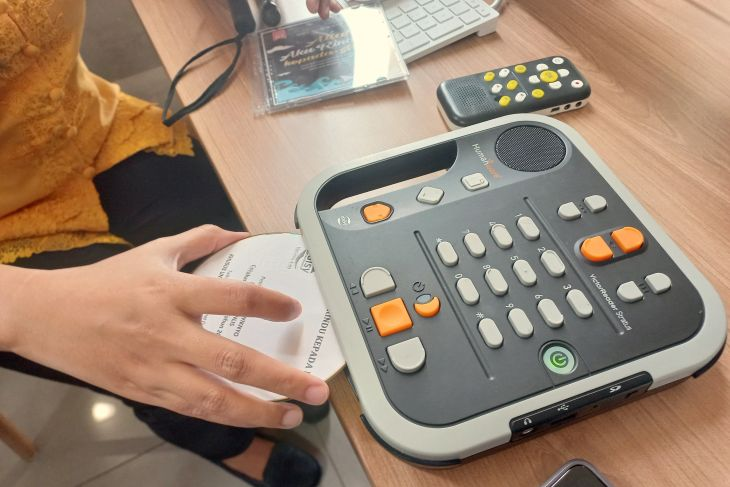

Pengunjung membaca di ruang koleksi di Perpustakaan Jakarta, Jakarta, Jumat (20/10/2023). ANTARA/Nadia Putri Rahmani
akarta (ANTARA) - Suara hiruk pikuk masyarakat yang beraktivitas di Jalan Cikini Raya, Jakarta Pusat, pada pagi hari memenuhi suasana kedatangan langkah kaki menuju pusat kesenian dan kebudayaan Taman Ismail Marzuki (TIM). Semua suara bising itu sekejap hilang ketika masuk ke dalam Perpustakaan Jakarta yang berada tepat di depan pintu masuk TIM. Kedatangan siapa pun disambut dengan ramah oleh staf yang bertugas di bagian depan. Pengunjung yang ingin memanfaatkan perpustakaan langsung diarahkan ke petugas lain yang mengampu bagian reservasi. Dengan naik eskalator ke lantai berikutnya, pengunjung langsung disajikan dengan ruang lapang yang dikelilingi oleh buku dalam suasana yang hening dan tenang, tetapi ramai. Tak ada satupun orang yang berbicara. Semua sibuk berkutat dengan urusan masing-masing. Ada yang mengerjakan tugas, membaca buku, bahkan sekadar menikmati pemandangan TIM dari balik dinding kaca sambil bersantai dengan kawan. Keheningan itu terasa ramai. Hati menjadi sejuk melihat antusiasme pengunjung yang memanfaatkan perpustakaan sebagai ruang ketiga mereka untuk melakukan aktivitas. Itulah keramaian yang hati ini rasakan. Di tengah hiruk pikuk Jakarta di mana manusia berkejaran dengan waktu, Perpustakaan Jakarta seolah menyediakan tempat untuk bernafas, sebelum melanjutkan hari.
Sedekat itu
Kehangatan yang dirasakan tersebut seperti bentuk manifestasi dari tagline yang diusung oleh Perpustakaan Jakarta, yaitu "Dekat dengan Warga, Melekat di Hati Warga; Perpustakaan Jakarta memang #Sedekatitu". Dalam paparannya, Kepala Unit Pelaksana Teknis (UPT) Perpustakaan Jakarta dan Pusat Dokumentasi Sastra (PDS) HB Jassin Diki Lukman Hakim mengatakan mereka percaya bahwa perpustakaan memiliki ragam peran strategis dalam membawa dampak positif bagi warga. Perpustakaan Jakarta awalnya bernama Perpustakaan Umum Daerah Provinsi DKI Jakarta. Tepat pada tanggal 7 Juli 2022, perpustakaan tersebut terlahir kembali dengan semangat baru dan nama baru. Setelah melalui proses revitalisasi, Perpustakaan Jakarta dan PDS HB Jassin siap menjadi ruang ketiga untuk semua kalangan masyarakat. Perpustakaan lekat dengan kesan sebagai tempat penyimpanan buku atau hanya sebagai tempat menyimpan koleksi. Itulah yang ingin dipatahkan oleh Perpustakaan Jakarta. Tak hanya sebagai tempat koleksi, tetapi menjadikan perpustakaan sebagai tempat belajar, berkarya, dan berkumpul. Masyarakat dari seluruh kalangan dan usia bisa memanfaatkan semua fasilitas di perpustakaan secara gratis. Bagi anak-anak, Perpustakaan Jakarta memiliki koleksi buku anak pada lantai empat. Anak yang membaca juga bisa memanfaatkan bilik bermain untuk membaca sambil bermain. Terdapat berbagai mainan yang dapat mengasah motorik anak. Ada pula bilik bercerita yang dimanfaatkan sebagai tempat untuk mendongeng pada setiap pekannya. Beranjak ke pengunjung yang berusia produktif, Perpustakaan Jakarta memiliki bilik siniar yang bisa dimanfaatkan untuk membuat podcast yang saat ini sedang digandrungi. Pengunjung hanya perlu membuat reservasi dan nantinya akan ada teknisi yang membantu terkait teknis penggunaan alat. Tak hanya pengunjung yang datang secara individu, bagi komunitas atau kelompok yang ingin mengadakan acara pertemuan atau bahkan mengadakan kelas workshop, Perpustakaan Jakarta juga menyediakan ruang multifungsi yang terletak di lantai enam. Perpustakaan juga lekat dengan kesan tempat bagi "kutu buku" yang lebih suka membaca buku-buku berat dan sulit. Namun, anggapan itu terbantahkan ketika melihat seorang mahasiswa membaca sebuah buku bertemakan hiburan. Ia duduk bersila di ruang membaca yang menghadap ke arah ke taman dan Planetarium TIM. Tangannya memegang sebuah buku berjudul "The Marvel Book: Expand Your Knowledge of a Vast Comics Universe" yang berisi penjelasan karakter-karakter serta jalan cerita dari komik terbitan Marvel. Pemandangan itu menjadi penyadar bahwa perpustakaan kini bukan lagi hanya untuk golongan tertentu, tetapi juga menyediakan pilihan buku untuk masyarakat umum yang mungkin hanya ingin menghabiskan waktu dengan membaca buku yang tidak berat. Buku berbagai topik ditawarkan, mulai dari sejarah, buku bertemakan kejakartaan, hingga buku dengan topik edukasi pemberantasan korupsi. Perpustakaan Jakarta bekerja sama dengan Komisi Pemberantasan Korupsi (KPK) dengan menghadirkan KPK Corner. Pojok tersebut menyediakan buku-buku mengenai antikorupsi karena perpustakaan tersebut tak hanya dikunjungi mahasiswa, tetapi juga ibu rumah tangga. Satu hal yang menarik perhatian adalah kehadiran Ruang Inklusi yang terletak di lantai lima perpustakaan. Sama seperti Perpustakaan Nasional, Perpustakaan Jakarta juga menyediakan ruang bagi penyandang disabilitas. Pengampu ruang tersebut adalah Agatha Febriany Anjarsari yang menjabat sebagai Pelaksana Teknis Tingkat Ahli di Perpustakaan Jakarta. Ia adalah seorang penyandang tunanetra. Ia menyapa dengan ramah ketika langkah kaki ini masuk ke dalam ruangan tersebut. Kata dia, pengunjung ruangan tersebut tidak semata para penyandang disabilitas, tetapi ada juga anak-anak yang belum bisa membaca dan lansia yang pandangannya sudah melemah. Sebuah alat, seperti walkie-talkie ia tunjukkan. Namanya adalah "file reader". Penyandang tunanetra bisa menggunakan alat itu untuk mendengarkan buku audio dalam bentuk PDF, TXT, atau Word. Nantinya, alat akan mengubah dokumen tersebut menjadi suara.
menunjukkan alat pembaca piringan CD di Ruang Inklusi Perpustakaan Jakarta, Jakarta, Jumat (20/10/2023). ANTARA/Nadia Putri Rahmani
Selain itu, ada juga alat pemutar buku audio dalam bentuk piringan CD. Sama seperti "file reader", alat itu akan memutar buku audio dan mengeluarkan suara. Perbedaannya adalah apabila file berasal dari CD, suara yang direkam adalah berasal dari buku yang dibacakan oleh orang. Lalu, bagaimana dengan penyandang disabilitas yang lain? Ruang Inklusi juga menyediakan buku Braille. Namun, pengunjung yang datang lebih menyukai format audio buku dibanding Braille karena koleksinya lebih mudah diperbarui, sehingga lebih aktual. Sejak perpustakaan direvitalisasi pada tahun 2022, sesuai data, ada peningkatan pengunjung. Pengelola juga melakukan layanan jemput bola ke sekolah luar biasa (SLB) dan panti sosial. Pengelola menyadari bahwa mobilitas tunanetra terbatas. Ada yang tidak bermobilitas secara mandiri. Karena itu perpustakaan yang datang ke SLB atau panti sosial. Penyandang disabilitas yang rata-rata datang pada akhir pekan juga mendapat bantuan dan pendampingan dari petugas untuk melakukan reservasi serta mengakses fasilitas di Ruang Inklusi. Kehadiran ruang tersebut tidak berdiri sendiri. Perpustakaan Jakarta menyediakan "guiding block" yang mengarahkan penyandang tuna netra ke toilet disabilitas dan beberapa tempat lainnya. Ada pula penunjuk arah dari aplikasi PetaNetra yang baru saja diluncurkan di Perpustakaan Jakarta pada 5 Agustus 2023. Lewat aplikasi tersebut, penyandang tunanetra bisa mengakses navigasi perpustakaan melalui Augmented Reality (AR). Dengan adanya fasilitas-fasilitas tersebut, penyandang disabilitas tak perlu khawatir untuk menghabiskan waktu dengan kegiatan bermanfaat di perpustakaan tersebut, seperti masyarakat lainnya. Tak hanya dari aspek fasilitas, Perpustakaan Jakarta juga mengadakan acara yang senada dengan konser musik, namun ada sentuhan sastra lewat pembacaan puisi. Tujuannya adalah agar lebih banyak orang mengetahui eksistensi perpustakaan tersebut. Acara tersebut bernama "Night at the Library". Pada Jumat (20/10), diadakan untuk volume yang keenam. Beberapa selebritas hadir untuk mengisi acara, di antaranya adalah penyanyi muda Bernadya dan aktor Kholidi Asadil Alam yang membacakan puisi karya Taufik Ismail berjudul "Sebuah Jaket Berlumur Darah". Ruang membaca berundak di tengah perpustakaan yang menjadi ikon unik gedung tersebut diubah layaknya seperti venue konser. Antrean penonton mengular hingga bisa memenuhi empat lantai perpustakaan tersebut.
Perencanaan ke depan
pintu seluas-luasnya untuk masyarakat menjadikan Perpustakaan Jakarta makin banyak dijadikan sebagai tempat pilihan alternatif bagi masyarakat DKI Jakarta untuk dikunjungi. Tak heran, pengunjung Perpustakaan Jakarta mengalami peningkatan tahun ini dari tahun 2022. Menurut data yang pengelola perpustakaan, jumlah pengunjung selama enam bulan dari Januari hingga September 2023 sebanyak 259.122 orang. Jumlah tersebut menunjukkan peningkatan jika dibandingkan enam bulan sebelumnya, yaitu Juli hingga Desember 2022 sebanyak 158.658 orang. Lewat perbaikan dan penyempurnaan berbagai sarana, Perpustakaan Jakarta bisa semakin inklusif bagi seluruh kalangan sosial masyarakat dan juga semakin mendukung langkah untuk mencerdaskan warga DKI Jakarta.